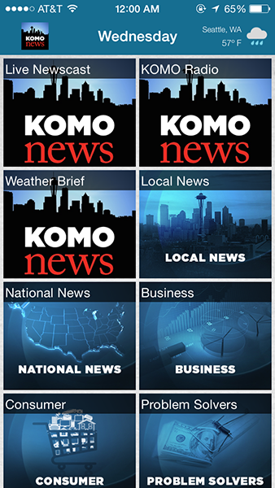

As a local app, I thought this has really bad interactive design and felt awkward to guide your fingers. As this is a prominent News Station, I think it really lacked the interface that other news sites have. Specially when its gears towards all audiences and provides critical information for Seattle.
This site would be useful for those who are tourist or wants to find and explore more of Seattle. The strength in this site is that it has massive amounts of information but there is no way of to collect the data or a good way to make a hierarchy and search for things that people might need. It needs more visuals and type hierarchy.